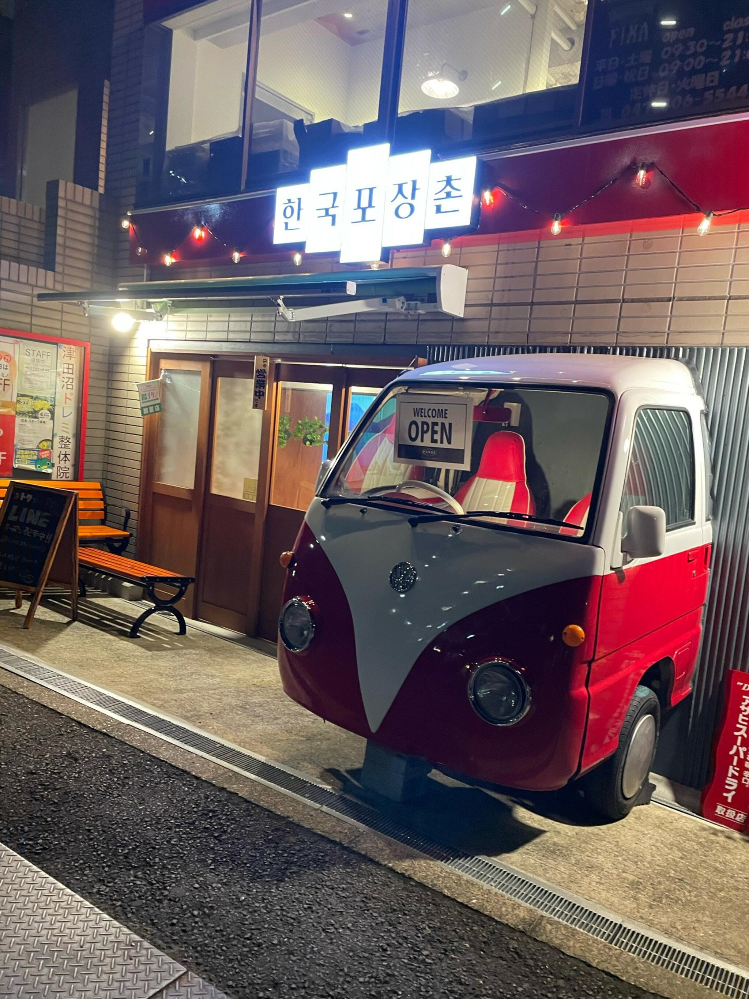
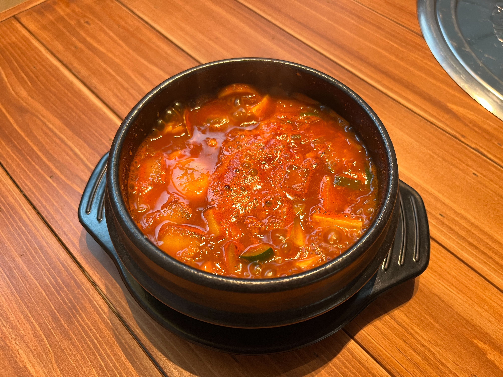
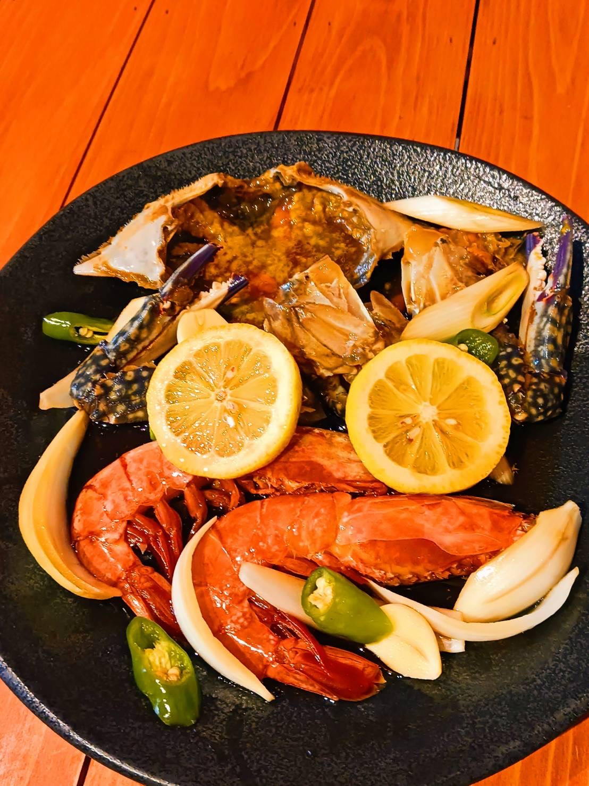

日本で感じれる本場のサムギョプサルを味わえる
当店で感じられる豚バラ肉は、本場で食べられる味が同じで、薬味もしっかり用意されており、コース料理として楽しめます。 サンチュや野菜と一緒に楽しむともっと味が風味されます。


当店で感じられる豚バラ肉は、本場で食べられる味が同じで、薬味もしっかり用意されており、コース料理として楽しめます。 サンチュや野菜と一緒に楽しむともっと味が風味されます。

お店で私が一番おすすめするランチメニューはスンドゥブチゲです。 ランチの中で一番食べやすいと思います。 韓国人はストレスを解消する時に辛いものを食べる人が多いです。 スンドゥブチゲが辛いので、ストレス解消にもいいですし、味もいいですよ。

期間限定のカンジャンケジャンは、韓国人が好きなカンジャンケジャン！ 味もいいし、ご飯と食べてもとてもいい食べ物の身を全部食べて、カニの甲羅にご飯を混ぜて食べる風味も！